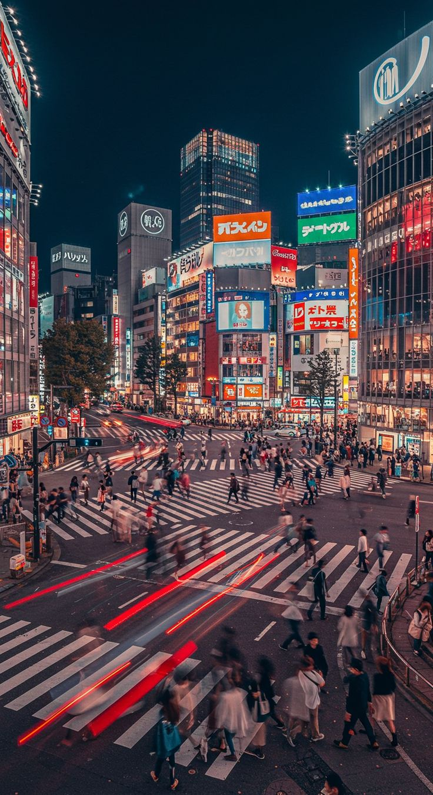

O Japão é um país repleto de cidades fascinantes, cada uma com sua própria personalidade e atrações únicas. Aqui estão algumas das cidades mais populares para visitar no Japão:

Tóquio é a capital do Japão e uma das maiores metrópoles do mundo, conhecida por sua impressionante mistura entre tradição e modernidade. Originalmente, a cidade era uma pequena vila de pescadores chamada Edo, fundada por volta do século XII. Seu crescimento começou de fato no século XVII, quando o xogunato Tokugawa estabeleceu ali seu governo, transformando Edo em um dos centros políticos mais importantes do país. Em 1868, com a Restauração Meiji, a cidade foi renomeada para Tóquio, que significa “capital do leste”, tornando-se oficialmente a capital do Japão. Atualmente, Tóquio é um dos principais centros econômicos, culturais e tecnológicos do mundo. A cidade oferece uma enorme variedade de experiências para turistas. É possível visitar templos históricos como o Sensō-ji, caminhar por bairros modernos como Shibuya e Shinjuku, ou explorar áreas voltadas à cultura pop, como Akihabara. Para visitantes, Tóquio se destaca pela organização, segurança e eficiência do transporte público, especialmente os trens e metrôs, que facilitam o deslocamento pela cidade. A culinária também é um grande atrativo, com opções que vão desde restaurantes sofisticados até comidas de rua tradicionais. Outro ponto importante é a diversidade de experiências: em um único dia, o turista pode visitar um templo antigo pela manhã, fazer compras em distritos modernos à tarde e aproveitar a vida noturna em áreas movimentadas. Essa combinação única faz de Tóquio um destino essencial para quem deseja conhecer o Japão de forma completa.